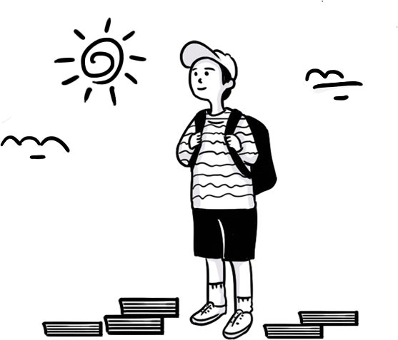
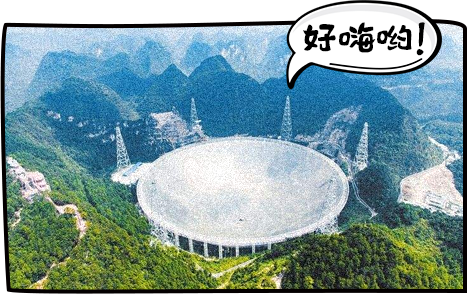
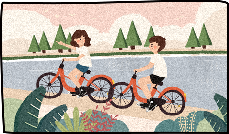
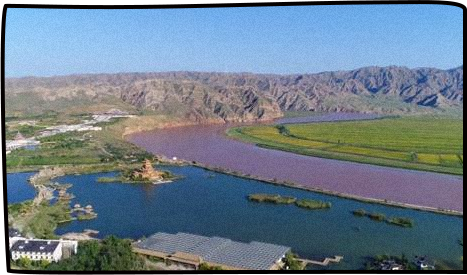
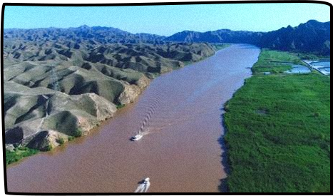
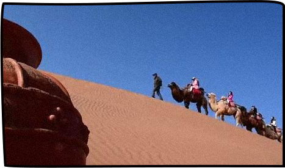
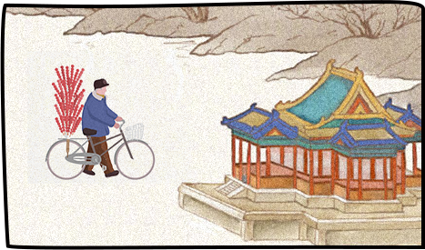
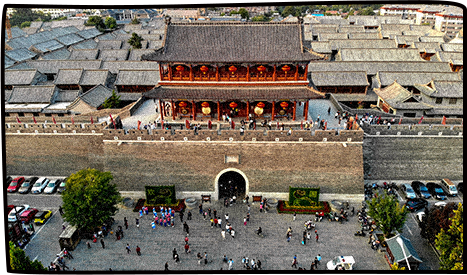
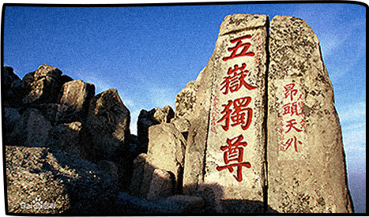

第一题
以下哪一句会是你写的四川旅游攻略标题？
干货+多图！成都、九黄、峨乐……安逸走四川！
易红易热搜！7天玩遍“有颜有味”的天府之国
盘熊猫、吃火锅、逛天府绿道，用最悠闲的方式打卡四川！
第二题
当你到贵州，听到有人说“我想静静”，他会_____

带上耳机
放下手机，到FAST静默区仰望星空
去苗寨找静静一起吃酸汤鱼
第三题
“中！”在河南，这句话表达的意思是_____
这里是中原，有天地之中历史建筑群
河南人推崇“中庸之道”
行，当然可以！
第四题
湖北哪里最适合练功夫？
“北少林，南武当”，武当山走起
“学好数理化，走遍天下都不怕”，在家学习最适合
就近取材，去公园跟爷爷学太极
第五题
旅行中你最能hold住全场的技能是？

不差钱算不算
没有攻略不了的城，没有热不了的场
拍人一米八，拍景美如画
第六题
说到“宁夏”，你会……



快把我的麦拿来呀！一起唱~
这不是《天龙八部》中遇见梦姑的地方吗
忽然想去贺兰山脚下喝杯葡萄酒
第七题
如果一天“自由行”，在江西你会？
不忘初心，去井冈山感受“星星之火”
去识一识庐山的真面目
拍婺源的油菜花，做票圈最靓的崽
第八题
在北京，如何燃烧你的卡路里？

骑共享单车绕故宫一圈
约上要减肥的小伙伴，去吃顿铜火锅
从望京走到王府井买糯米冰糖葫芦
第九题
来山东，吃土少年少女们必须打卡的5A景区是？


泰山
青州古城
大明湖
第十题
天雨流芳、风花雪月、春城花都，说的是云南哪三个地方？
丽江、大理、昆明
玉溪、丽江、香格里拉
西双版纳、大理、昆明
第十一题
你认为去湖南玩最正确的打开方式是？
去现场看一次快乐大本营
挑战张家界的网红玻璃栈道
打卡“洞庭天下水，岳阳天下楼”
长按保存图片
100%